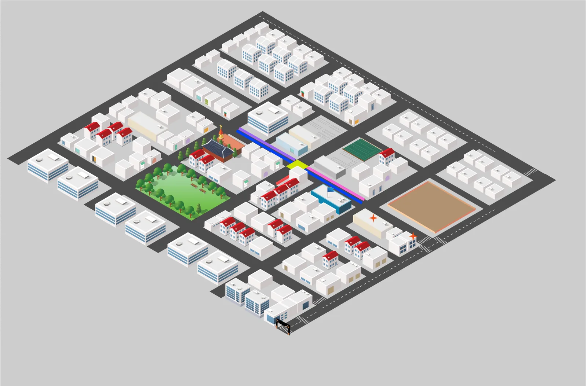
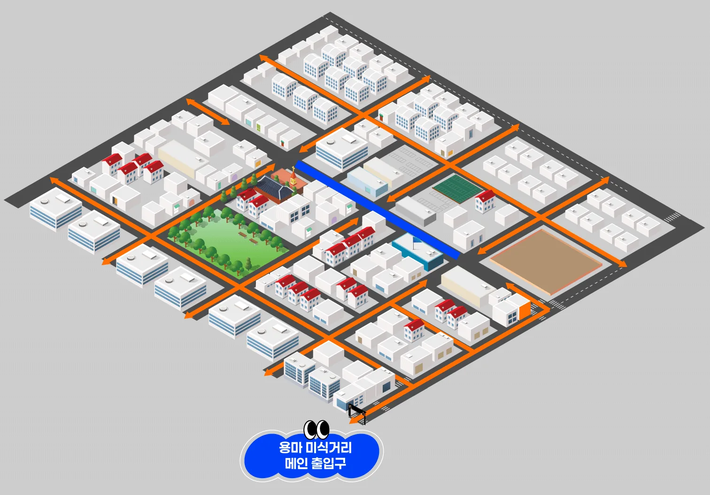

구획정리사업
포남동 103.8만㎡ 구획정리로 계획 주거지가 조성되고, 그 안에서 생활 골목상권이 자연 발생했습니다.
용마거리는 1970년대 구획정리사업으로 만들어진 포남동 주거지에서 자연스럽게 형성된 생활밀착형 골목상권입니다. 2024년 12월, 강릉시 제1호 골목형상점가로 지정되었습니다.
| 위치 | 강원특별자치도 강릉시 포남동 용마거리 일원 |
|---|---|
| 면적 | 29,171.14㎡ (상업지역 14,810.41㎡) |
| 점포 수 | 전체 168곳 (영업 158 · 빈 점포 10) / 상인회 회원 124곳 |
| 지정 | 2024. 12. 강릉시 제1호 골목형상점가 |
| 배후 인구 | 포남1동 10,518명 + 포남2동 11,627명 = 22,145명 |
| 접근성 | KTX 강릉역 600m(차량 5분) · 서울 청량리 1시간 24분 · 시외버스터미널 인접 |
| 인접 기관 | 강릉시청 · 강릉경찰서 · 강릉우체국 · 포남1동 주민센터 |

포남동 103.8만㎡ 구획정리로 계획 주거지가 조성되고, 그 안에서 생활 골목상권이 자연 발생했습니다.
수도권 당일 관광객이 급증했지만, 도심 골목상권으로 이어지는 야간 동선은 만들어지지 않았습니다.
골목형상점가로 공식 지정되며 법적 지위를 확보하고, 같은 달 상인회가 설립되었습니다.
지역상권 육성사업에 선정되어 4개 존 조성과 야간 상권 브랜딩을 추진합니다.
상권 매출·유동인구는 소상공인마당 빅데이터와 강릉시 통계 기준입니다.
| 구분 | 2022년 | 2023년 | 2024년 |
|---|---|---|---|
| 상권 평균 매출액 | 2,220만원 | 2,300만원 | 2,370만원 |
| 일평균 유동인구 | 11,500명 | 11,600명 | 11,750명 |
| 강릉시 관광객 | 약 3,200만명 | 약 3,200만명 | 3,323만명 |
| 강릉 외국인 관광객 | 28만명 | 32만명 | 35만명 |
※ 위 일평균 유동인구는 상권 전체·전 시간대 통행량 기준입니다. 사업 성과지표로 쓰는 ‘주말 야간(15~22시) 상권 내 방문객’은 차 없는 거리 운영구간 현장 실측 기준으로 측정 대상과 시간대가 다릅니다.
낮에는 바다와 카페거리, 밤에는 용마미식거리로 이어지는 동선을 만듭니다.
강릉선 누적 이용객 약 4,086만명
낮 중앙시장 → 밤 용마미식거리
K-미식벨트 핵심 식재료 연계
낮엔 카페거리, 밤엔 용마미식거리
해변 귀로 야간 방문객 유입
세인트존스·스카이베이 등 특급 호텔

2026 지역상권 육성사업(유망골목상권) 수정사업계획 기준입니다. 정기 운영일이 매주 금·토요일로 바뀌고, 사업기간이 2027년 3월까지 연장되었습니다.
| 사업명 | 2026 지역상권 육성사업(유망골목상권) — 강릉 포남 용마거리 골목형상점가 「용마미식거리」 |
|---|---|
| 비전 | 강릉의 밤을 물들이는 예술·미식·문화 야간 골목상권 |
| 사업기간 | 협약일 ~ 2027. 3. 31. (2027년 1~3월은 정산·결과보고) |
| 정기 운영 | 2026. 10. 16.(금)부터 매주 금·토요일 17:00 ~ 22:00 · 차 없는 거리 (현장 운영 ~2026. 12. 31. / 개막 2026. 9. 18.(금)) |
| 총사업비 | 276백만원 (국비 138백만원 · 지방비 138백만원) |
| 공간·인프라 | 4개 존 조성 · 거리 감성조명·음향 · 캐릭터 조형물 포토존 · 용마 바람길(파라솔·난방설비·몽골텐트) · 브랜드(BI)·다국어 홈페이지 |
| 공연·행사 | 골목어게인 버스킹·DJ 음악다방 통합 15회 · K-컬처 기획공연 1회(10. 30.~31. 동행축제 연계) · 어서와존·놀아존·한번봐존 3개 존 상시 운영 |
| 마케팅·홍보 | IPTV 중계 편성 · KTX 하이라이트 영상 「강릉에오면」 · 인플루언서 롱폼 6편·숏폼 50편 |
행정·기획·상인·현장실행이 각자의 역할을 나눠 맡습니다.
| 구분 | 기관 | 주요 역할 |
|---|---|---|
| 주최 | 강원지방중소벤처기업청 | 사업 주무 · 관리감독 |
| 주최 | 소상공인시장진흥공단 | 전담기관 — 사업비 교부·정산 · 운영 관리 |
| 주최 | 강원특별자치도 | 행정·재정 총괄 지원 |
| 주최 | 강릉시 | 현장 행정 지원 · 차 없는 거리 허가 |
| 주관 | STN미디어 (상권기획자) | 사업 총괄 기획·운영 · 방송·콘텐츠 제작 · 예산 관리 |
| 주관 | 포남용마거리 골목형상점가 상인회 (상인조직) | 상인 조직화 · K-미식벨트 운영 · 상생협약 추진 |
| 협업 | 강원영동이벤트 | 버스킹·공연·체험부스 · 시설 설치·철거 · 안전관리 |
2024년 12월 설립 이후 경영현대화 사업, 시장지킴이 인력 지원 사업을 수행했고, 2025년에는 제1회 골목맛집 대축제와 총 10회의 버스킹 축제를 직접 운영했습니다. 2026년 1월 강원특별자치도 골목형상점가 우수사례 상권으로 선정되었습니다.
상권이 살아나면 임대료가 올라 기존 상인이 밀려나는 일이 생깁니다. 용마거리는 사업 초기에 임대인과 상생협약을 맺어 임대료를 동결하고 임대 기간을 보장합니다. 오래 골목을 지켜온 분들이 성과를 함께 누리도록 하는 것이 이 사업의 전제입니다.